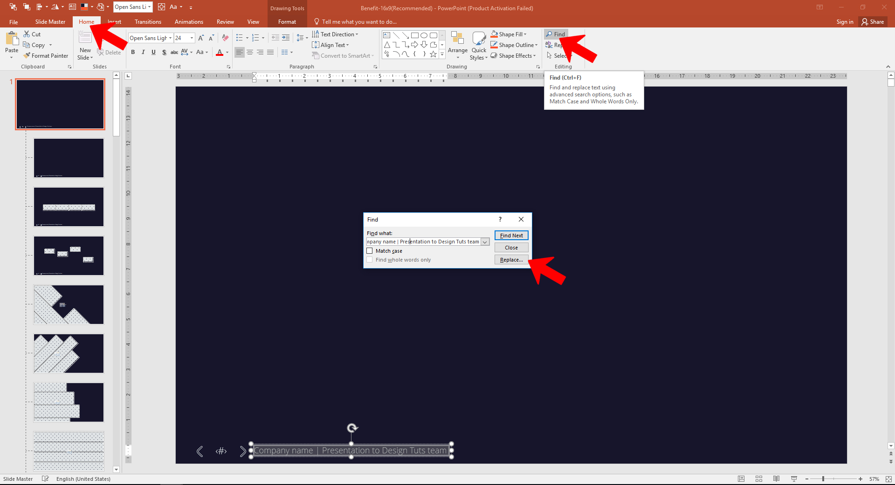

DesignBall | Documentation
- First Step (Important!)
- *Install DesignBall font icons
- *Install DesignBall font icons on MAC
- *Install Text Fonts
- *Install Text Fonts (MAC)
- *Install XML color schemes
- *Install XML color schemes(MAC)
- Customization
- Use Placeholders
- Edit Footer Section
- Recolor a graphic object
- How to use photo animator slide (Parallax slides!!!)
- Edit Other Slides
- Use DesignBall Font Icons
- How to rate our item
Getting Started
Why aren’t all the photos included?
Many of the photos are free, and open sourced, and do not have any copyright restrictions. They are included both in the decks, and also in a separate folder for your use. But other photos are not open-sourced and cannot be included for copyright reasons. The link to the other photos is below the slide.
A plea:
I’ve been very fortunate that lots of people that have used these files have found them useful enough to give them high ratings/stars. If you find these useful, please don’t be bashful. These ratings really make a difference for me, and they help me to continue creating these templates.
An offer
If you have any questions, or if there is something you’re having trouble figuring out, don’t feel like you have to go it alone. I try to answer all my emails. Drop me a line and I’ll do everything I can to help you out. My email is designtuts007@gmail.com
Before you begin:
Make sure you make a duplicate copy of your templates that you don’t edit so you can go back to the original templates if you need.
Also make sure you save a new version of your file as you are working on it every so often. That way if you crash or need to go back to a previous version you have it.
If you have questions or comments, or just want to talk shop, you can email me at designtuts007@gmail.com. And seriously, don’t be bashful about dropping me a line!
Install DesignBall Font Icons(Really Important!)
This is really important, before to open our presentation you need to install the DesignBall Font Icons used
1. Download the DesignBall Font Icons
2. Extract Zip file
3. Select All
4. Click Right Mouse
5. Choose 'Install'
How to install DesignBall font icons on MAC
Download DesignBall font icons
This is really important, before to open our presentation you need to install the DesignBall font icons used
Install Text Fonts(Really Important!)
1. Download the Fonts Here
2. Install All .ttf File
We’re using the Open Sans family of fonts. You can download them here: http://www.fontsquirrel.com/fonts/open-sans. Or just Google “Open Sans”. We make a lot of use of the Open Sans Light font, but you need them all.
To install: Download the fonts, unzip, and copy them to your font folder. Then quit PowerPoint and reboot your computer.
Envato policy forbids me from including these fonts (even though they are free) with the download, but it’s easy to get them and install, and your presentations will look much better by using these beautiful fonts.
Install Text Fonts MAC(Really Important!)
Install XML color schemes
Copy all xml files contained in the folder renamed: "04 XML Color Schemes" and paste to this location all depends of your system
Windows 7
Option 1: C:\Program Files or Program Files (x86)\Microsoft Office\Document Themes 15\Theme Colors
Option 2: C:\Program Files or Program Files (x86)\Microsoft Office 15\root\Document Themes 15
Windows 8/10
C:\Users\YourUserName\AppData\Roaming\Microsoft\Templates\Document Themes\Theme Colors
Install XML color schemes (MAC)
MAC Office 2011
MacintoshHD\Users:YourUserName\Library\Application Support\Microsoft\Office\User Templates\My Themes\Theme Colors
Note: If you don’t see the Library folder please follow these instructions: click the desktop to make sure you’re in the Finder, hold down the Option key, then choose Go > Library
MAC Office 2016
MacintoshHD\Users:YourUserName\Library\Group Containers\UBF8T346G9.ms\User Content\Themes\Theme Colors
How to add picture in Placeholders
1. Click on the picture icon of the placeholder shape
2. Choose your image
3. Done
How to Change Footer Section
1. Go to ‘View’ Menu
2. Click ‘Slide Master’
3. Scroll up and modify or delete the footer of the first slide with your info
4. Go to 'View' Menu
5. Click 'Normal'
This must be the most common question I get. There are 2 ways:
Way 1: Go to the main master slide. Go to the Slide Master tab. Then scroll up to the top of the thumbnails on the left. Notice how the one on the top is slightly larger than the other ones? That’s your main master. There you can change the text to be whatever you want. But you have to do this for each set of masters – if you use the dark, light, or whatever, you have to change it in each place. Each file included in this download contains two main masters; you have to change it on each. Or for an easier way you could try…
Way 2: Go to Search and Replace in PowerPoint and replace “Presentation to Joe Smith” with whatever you want it to say. Then select “Replace All”. This is a super easy way of doing it and will surely impress all your friends.
How to recolor a graphic object
Follow These Instructions:
1. Go to "Design" Tab
2. Click 'Variants'
3. Select Colors
4. Choose the Colors
Some objects are grouped and some are not in this template, depending on the need and function of the page. Let’s look at an example page to see how this works:
On the page that has the man and woman icons, let’s say you want to make the man’s head be red. While it would look silly, I suppose, it’s just to demonstrate the technique – so bear with me. To do this, simply click on the man. This selects the group. Then click on his body and it selects just that one. Hold down the shift key and select his head. Now you have selected his head and body. Next, click on the head. Now you’ve selected the head only. (Yes, I know these are not screen captures from this specific template – but it works the same)
Now in the shape fill (on the home tab) select a different color.

Remember, that’s one click to select the group, another click to select an object inside the group. If you want to select more than one object in the group, hold down the shift key as you click on things and you can select multiple items.
How to use photo animator slide
How to use DesignBall Font icons
Without Losing Animation
How to rate our item
1. Go to your download section http://graphicriver.net/downloads
2. Rate with 5 stars
DesignBall team
designtuts007@gmail.com